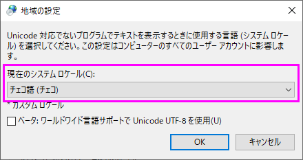
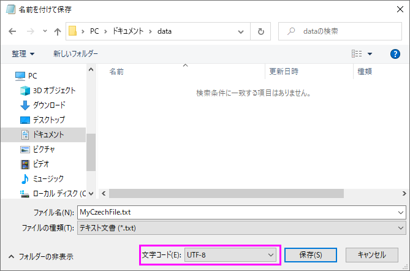

FAQ-1182 東欧/中欧の文字をインポートするにはどうすればよいですか?
Import-Eastern-Central-European-Characters
最終更新日：2023/6/19
東欧/中欧文字 (ANSI エンコード) を含むデータファイルをインポートするには、次の3つの方法のいずれかを試してください。
方法 1: 一時的に@cpsを1250に設定
- Originメニューからウィンドウ：スクリプトウィンドウ を選択します。
- 開いたスクリプトウィンドウで、以下を入力します。
@cps=1250
Enterキーを押して一時的に@cpsを1250に設定します。
- データをインポートします。
- Note: インポート後、@cps をデフォルト値である-1に戻してください。
方法 2: OSコードページをチェコ語に変更
- Windowsのコントロールパネルを開きます。
- 時計と地域 > 地域を選択して地域ダイアログを開きます。
- 管理タブを開きます。Unicode対応でないプログラムの言語の項目でシステムロケールの変更ボタンをクリックします。
- システムロケールとしてチェコ語（チェコ）を選択します。
- 
- OKをクリックします。プロンプト従ってPCを再起動します。
- 再起動後、データをインポートします。
- Note: この変更はOS全体に影響するため、Microsoftのソフトウェア (Word、Excel、PowerPoit など)、メモ帳でも東欧/中欧の文字を正しく表示できるようになります。
問題 3: UTF-8エンコードでファイルを再保存
- 上述の方法 2の手順でOSコードページをチェコ語 (チェコ)に変更します。
- メモ帳でデータファイルを開きます。正しく表示されるはずです。
- メニューからファイル：名前を付けて保存を選択し、文字コードをUTF-8に設定して保存します。
- 
- これで、OSコードページを元に戻して、データのインポートを試みることができます。正しくインポートされるはずです。
キーワード:東ヨーロッパ文字, 中央ヨーロッパ文字データ, チェコ, データコネクタ, データインポート, 特殊文字, データフォーマット, データ種類